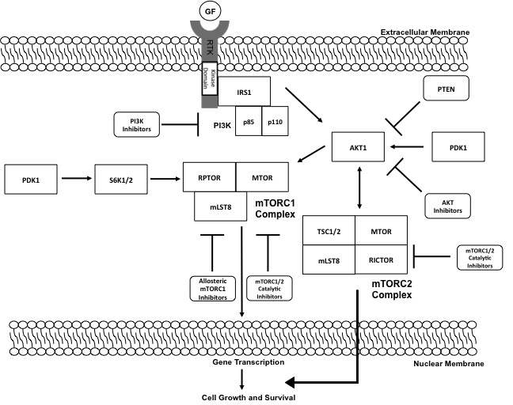

MAPK Pathway

The MAPK pathway consists of a cascade of serine/threonine kinases that are activated downstream of the active Ras GTPase. Conical members of the pathway are MAPKKK (RAF), MAPKK (MEK), and MAPK (Erk1/2). Targeted therapies against the MAPK pathway in clinical use include BRAF and MEK inhibitors
BRAF is mutated in 90% of melanomas. Several BRAF inhibitors have been approved by the FDA.
MEK operates downstream of mutant BRAF. FDA approved drugs targeting MEK are used as a means of circumventing resistance to BRAF inhibitors.